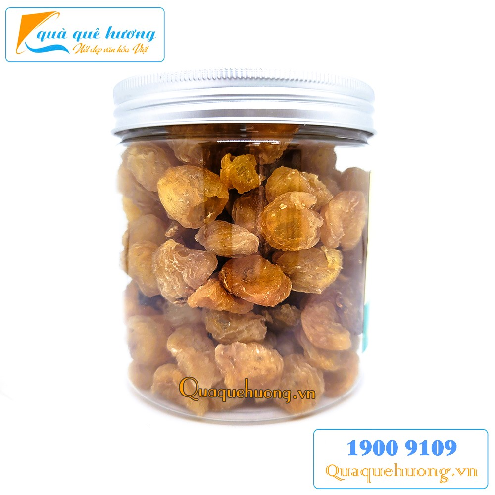

Nhãn sấy dẻo
Giá: 90.000đ
Xuất xứ: Long An, Việt Nam
Mô tả: Nhãn sấy dẻo được chế biến từ những trái nhãn chín mọng, giữ nguyên hương vị tự nhiên, không chất bảo quản, thích hợp làm món ăn vặt bổ dưỡng.
← Quay về trang chủ
Giá: 90.000đ
Xuất xứ: Long An, Việt Nam
Mô tả: Nhãn sấy dẻo được chế biến từ những trái nhãn chín mọng, giữ nguyên hương vị tự nhiên, không chất bảo quản, thích hợp làm món ăn vặt bổ dưỡng.